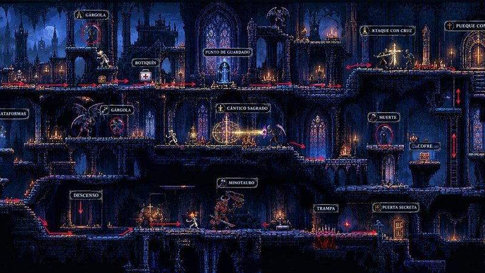
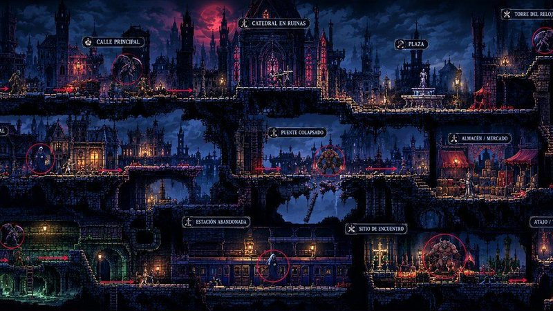
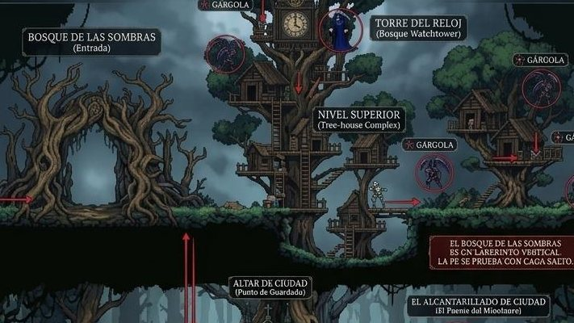

Un héroe que salva vidas
Combates con la Cruz Consagrada y te curas con un botiquín de primeros auxilios. La medicina es parte de la jugabilidad.
Hecho en Nayarit · Acción 2D · Pixel art gótico
Un exsacerdote convertido en paramédico rompe el equilibrio cósmico al salvar a su esposa. Ahora los demonios se la han llevado. Combate con fe, cúrate con medicina y desciende al inframundo.
La historia
Tras una visión en la que ve morir a su esposa, el Hermano Cruz deja el sacerdocio para hacerse paramédico. Cuando por fin logra salvarla, las puertas del inframundo se abren. Con su cruz en una mano y su botiquín en la otra, y guiado por el espíritu de un médico caído, emprende el rescate.
Objetivo: atraviesa los tres niveles iniciales, derrota al jefe de cada uno y llega hasta tu esposa antes de que el inframundo se la lleve para siempre.
Combates con la Cruz Consagrada y te curas con un botiquín de primeros auxilios. La medicina es parte de la jugabilidad.
Te advierte de trampas, ataca a tu lado y te revive una vez por nivel. Accesible para nuevos, retador para veteranos.
Con HellMed Hub revisas tu progreso, personalizas skins, compras DLCs y hablas con la comunidad desde el celular.
Funciona con 8 GB de RAM y gráficos integrados. Precio regional en pesos y hecho en español desde el inicio.
Facciones
Selecciona una facción y luego un personaje para ver su historia, estadísticas y habilidades.
Exsacerdote · Paramédico
“La fe me dio fuerza. La medicina me dio las manos para usarla.”
Tras ver en una visión la muerte de su esposa, dejó los hábitos para hacerse paramédico. Al salvarla rompió el equilibrio cósmico y los demonios se la llevaron. Ahora combate con la Cruz Consagrada y se cura con su botiquín de primeros auxilios.
Cómo jugar
Aprende lo básico en un minuto: cuatro ideas y los controles para PC.
Recorre cada nivel de izquierda a derecha, esquiva trampas y busca el camino hacia el jefe del escenario.
Ataca con la Cruz Consagrada, usa el Cántico Sagrado y la Lanza de Luz. Esquiva y contraataca.
Usa tu botiquín de primeros auxilios para recuperar vida. La medicina es parte de la jugabilidad.
Te avisa de los peligros, te da pistas y te revive una vez por nivel. Úsalo bien.
Los controles pueden cambiar durante el desarrollo. Aquí siempre verás los más recientes.
Escenarios y niveles
Cada nivel tiene su propio ambiente, sus enemigos y un jefe que te espera al final.



Capturas e ilustraciones del juego en desarrollo.
Galería
Personajes y lugares de HELLMED. Toca una imagen para verla en grande.
Especificaciones
Diseñado para computadoras escolares y de oficina. Si tu PC abre un navegador con varias pestañas, probablemente corre HELLMED.
Desarrollo web
Sitio web oficial.
Equipo de desarrollo
Diseño y desarrollo del videojuego HELLMED: Pulse of the Damned.
Diseñador
Diseño y desarrollo del videojuego HELLMED: Pulse of the Damned.
Equipo de desarrollo
Diseño y desarrollo del videojuego HELLMED: Pulse of the Damned.
Desarrollo móvil
Desarrollo de la aplicación móvil HellMed Hub.
Únete
Tres niveles iniciales: Catedral en Ruinas, Ciudad y Bosque de las Sombras. Prueba gratis el nivel tutorial antes de comprar.
~$0000 precio regional
Versión para consolas: próximamente.
Reanuda tu misión, personaliza skins (Cura Clásico y Paramédico), consulta tus estadísticas y logros, compra nuevos mapas y participa en el foro de la comunidad.
Gratis con compras opcionales
App móvil independiente para Android. Próximamente.
Guarda el sitio de HELLMED como una app en tu computadora o teléfono y consulta la información del juego aunque no tengas internet. No es el videojuego ni la app HellMed Hub.